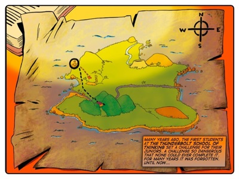
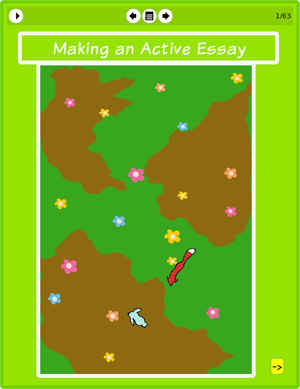

Story: The Apple of Knowledge
Theme: The importance of concepts.
Synopsis
The Thunderbolt kids find a map left behind by the school’s first students. This leads them to a cave the holds a golden apple. When they enter the cave Jojo grabs the apple immediately and the kids become trapped. By solving a series of riddles and completing challenges the kids eventually find their way out the cave. Each riddle and each challenge teaches them something about the building blocks of ideas. And, overall, the message is that thinking about things is not automatic and easy. It's hard. But when you labour over your thinking and when you take time to meet the challenge of thinking, then you will be rewarded for your efforts.
The key challenge explores the skill of identifying the features of a concept. That is, the skill of identifying what a set of objects or thoughts have in common and what makes them different from each other. In this case, the kids must search through a pile of keys. What they all have in common is that they are keys – they open locks. But there are features that make the one they're looking for distinct from the others.
The bridge challenge represents the fact that thinking conceptually and thinking things through thoroughly is not easy. And if you take the easy way out, i.e., not thinking things through, then you'll land up in trouble.
The final challenge simply represents the difficulty of making the choice to always think things through versus the much easier option of simply stealing other people's thoughts.
Escaping the cave with the apple requires that the kids draw on all the thinking lessons that they have learned. And failing to use their mental skills correctly puts the Thunderbolt kids in danger. The first “stolen” apple, represents an idea that hasn’t been taken apart and understood and it is finally replaced with an apple that has been earned. It has been earned because acquiring it required thinking. Earning the apple represents learning about ideas, step by step.
Activity
This activity challenges learners to explore the concept of school and to think about al the ideas that relate to it.
The purpose is to practise using a graphic organiser to keep track of their thoughts so that they can see a visual representation of the interconnectedness of concepts.
In doing this activity we want learners to recognise that thinking about ideas is much simpler than it sounds if you use tools to help you. Using graphic tools to keep track of and organise your thoughts helps make the work of thinking more effective.

The eToys project: Making an active
essayIn this project Sophie shows learnes how to create a book in eToys, and how to use a book to create an active essay. An active essay is an essay on a computer that contains not only text, but some form of computerized interaction. Unlike a printed essay, an active essay can have animations, buttons, calculators, and simulations built into the pages. Sophie shows learners how to put an animated fox and rabbit into a book to tell a simple story. The intention behind this project is to inspire learners to think of eToys as a tool or medium for exploring and communicating ideas.